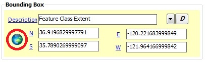

Mandatory element
These elements include the North, South, East, and West bounding coordinates of the data resource, expressed in latitude in decimal degrees referenced to WGS 84. It is recommended that a Bounding Box Description be included with the Bounding Box coordinates.
For North and South bounding coordinates: -90.0 <= Bounding Coordinate <= 90.0
For East and West bounding coordinates: -180.0 <= East Bounding Coordinate <= 180.0When editing a metadata record from the ArcCatalog interface, the user has the option of updating the bounding box coordinates and description based off of the geographic extent of the selected feature class. To use the feature class extent, click on the globe button and the coordinates and description will autopopulate.

Note: Bounding box coordinates can be added to the EME database. They are stored in the "BoundingBox" table. To add a new set of bounding box coordinates to the EME database, follow these guidelines for Editing the Database.
none
Element type: real
Data.gov
ISO 19115
FGDC CSDGM
EX_GeographicBoundingBox/northBoundingLatitude
EX_GeographicBoundingBox/southBoundingLatitude